Chapter9 Graph Algorithms¶
Definitions¶
G(V, E)：
- G：图
- V = V(G)：有限的非空顶点集合
- E = E(G)：有限的边集合
Undirected graph：无向图，\((v_i,v_j)=(v_j,v_i)\)，是同一条边
Directed graph (digraph)：有向图，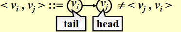
- Self loop is illegal. 环是不合法的
- 不考虑Multigraph（重复的边）
Complete graph：具有最大边个数（不考虑multigraph）的图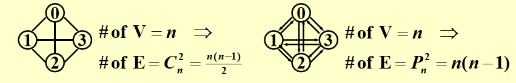
adjacent： - 无向图：\(v_i\) and \(v_j\) are adjacent / \((v_i,v_j)\) is incident on \(v_i\) and \(v_j\) 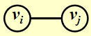 - 有向图：\(v_i\) is adjacent to \(v_j\) / \(v_j\) is adjacent from \(v_i\) / \(<v_i,v_j>\) is incident on \(v_i\) and \(v_j\) 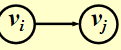
Subgraph G' \(/subset\) G：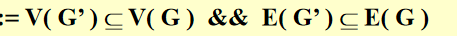
Path(\(/subset\) G) from \(v_p\) to \(v_q\)：路径 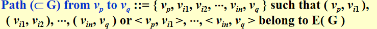
Length of a path：路径的长度就是路上的边的数量
Simple path：每个包含的角（不包括起点终点）都只经历了一次的路径
Cycle：是一个simple path 且 起点等于终点
connected：
- 无向图：
- 角的联通 - 有路径
- 图的联通 - 任意两个角联通
- 有向图：
- 强联通
- 弱联通
(Connected) Component of an undirected G：最大联通子图
tree：无环连通图
DAG：有向无环图
Degree(v)：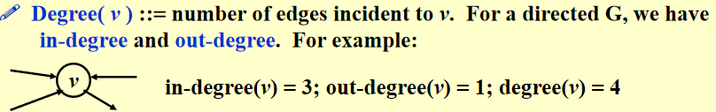
- 握手法则：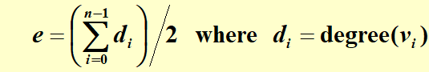
Representation of Graphs¶
Adjacency Matrix¶
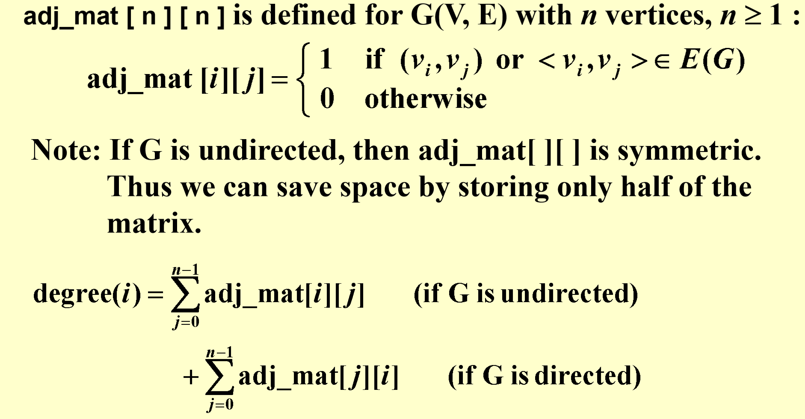
对时间和空间复杂度浪费较多
Adjacency Lists¶
把每一行用链表替代 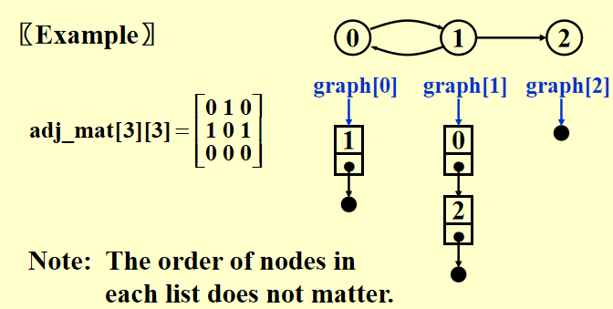
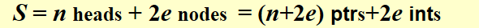
无向图的degree和有向图的out-degree都可以通过graph[i]的节点数获得
如果是处理有向图的in-degree，那么应该
- 方法1：把每一列用链表处理，得：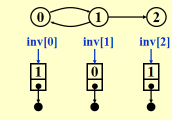 （Inverse Adjacency Lists）
- 方法2：构建Multi-list
Adjacency Multi-lists¶
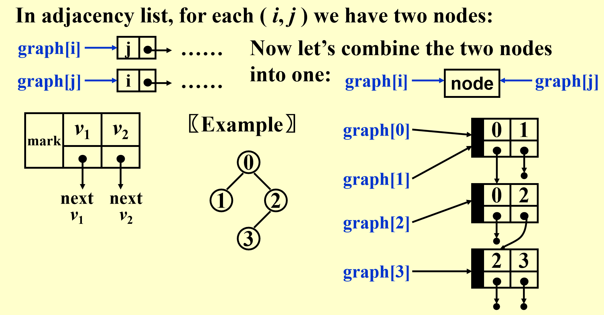
Weighted Edges¶
- 数组：直接把值变成weight
- adjacency lists / multi-lists: add a weight field to the node
Topological Sort 拓扑排序¶
AOV Network¶
事件发生在边上，只要到达顶点，事件就结束了
V(G): activities
E(G): 优先级关系
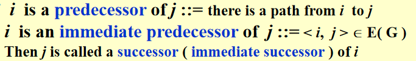
Partial order：传递性、非自反性（项目必须可行）
可行的AOV网络必须是DAG(有向无环图)
topological order¶
拓扑顺序是图中顶点的线性排序，对于任意两个顶点\(i, j\)，如果\(i\)是网络中\(j\)的前导，则\(i\)在线性排序中先于\(j\)
-
解决的是次序问题，不是排序问题
-
拓扑排序的结果是不唯一的
-
in-degree为0的节点是拓扑排序的起点
1 2 3 4 5 6 7 8 9 10 11 12 13 14 15 16 17 | |
\(T=O(|V|^2+|E|)=O(|V|^2)\) 利用边和顶点的关系化简
优化算法：（常考项！！）
1 2 3 4 5 6 7 8 9 10 11 12 13 14 15 16 17 18 19 20 | |
\(T = O(|V| + |E|)\)
最短路算法¶
-
输入：
- 有向图\(G=(V,E)\)
- cost function (weight) \(c(e)\) for \(e\) in \(E(G)\) \(/rightarrow\) length = 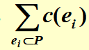
-
计算点到点的最短路和遍历点计算全局最短距离的复杂度是一致的
-
限制条件：如果有negative的weight并且形成了Negative-cost cycle，最短路无解
- 如果不存在Negative-cost cycle，则定义从s到s的最短路径为零
Unweighted Shortest Paths - 不带权重的最短路¶
-
等价于Breadth-first-search
-
实现方式（图论都会有一个table结构）：
1 2 3
Table[ i ].Dist ::= distance from s to vi /* initialized to be ∞ except for s */ Table[ i ].Known ::= 1 if vi is checked; or 0 if not Table[ i ].Path ::= for tracking the path /* initialized to be 0, 记录cost来源 */ - 算法1
\(T=O(|V|^2)\)，e的个数的复杂度被它的bound省掉了
1 2 3 4 5 6 7 8 9 10 11 12 13 14 15 16 17 18 19
void Unweighted( Table T ) { int CurrDist; Vertex V, W; for ( CurrDist = 0; CurrDist < NumVertex; CurrDist ++ ) { for ( each vertex V ) if ( !T[ V ].Known && T[ V ].Dist == CurrDist ) { T[ V ].Known = true; for ( each W adjacent to V ) if ( T[ W ].Dist == Infinity ) { T[ W ].Dist = CurrDist + 1; T[ W ].Path = V; } /* end-if Dist == Infinity */ } /* end-if !Known && Dist == CurrDist */ } /* end-for CurrDist */ }
Distance和Known造成了冗余 - 算法2 - 使用queue优化
\(T=O(|V|+|E|)\)
1 2 3 4 5 6 7 8 9 10 11 12 13 14 15 16 17 18 19 20 21 22
void Unweighted( Table T ) { /* T is initialized with the source vertex S given */ Queue Q; Vertex V, W; Q = CreateQueue (NumVertex ); MakeEmpty( Q ); Enqueue( S, Q ); /* Enqueue the source vertex */ while ( !IsEmpty( Q ) ) { V = Dequeue( Q ); T[ V ].Known = true; /* not really necessary */ for ( each W adjacent to V ) if ( T[ W ].Dist == Infinity ) { T[ W ].Dist = T[ V ].Dist + 1; T[ W ].Path = V; Enqueue( W, Q ); } /* end-if Dist == Infinity */ } /* end-while */ DisposeQueue( Q ); /* free memory */ }
Dijkstra's Algorithm (for weighted shortest paths) - 带权重的最短路¶
！！重点 ！！
- 前提条件：不带负边
- 定义一个\(S\) - { s and vi’s whose shortest paths have been found }（由起始点和已知最短路的点构成）
- 思路：贪心算法，cost随着加edge的过程是递增的，因此当前最小就是全局最小
-
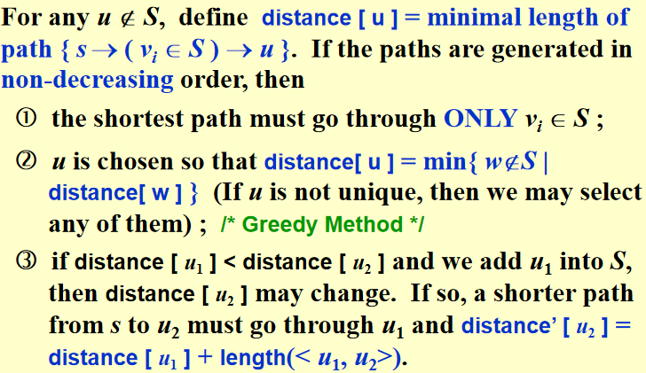
1 2 3 4 5 6 7 8 9 10 11 12 13 14 15 16 17 18 19 20
void Dijkstra( Table T ) { /* T is initialized by Figure 9.30 on p.303 */ Vertex V, W; for ( ; ; ) { V = smallest unknown distance vertex; if ( V == NotAVertex ) break; T[ V ].Known = true; for ( each W adjacent to V ) if ( !T[ W ].Known ) if ( T[ V ].Dist + Cvw < T[ W ].Dist ) { Decrease( T[ W ].Dist to T[ V ].Dist + Cvw ); T[ W ].Path = V; } /* end-if update W */ } /* end-for( ; ; ) */ } -
对于
V = smallest unknown distance vertex的不同实现方式：- Implementation1 - scan 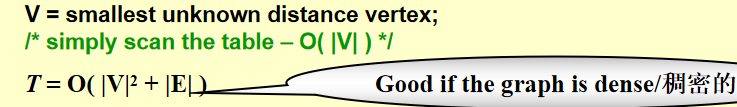
- Implementation2 - heap 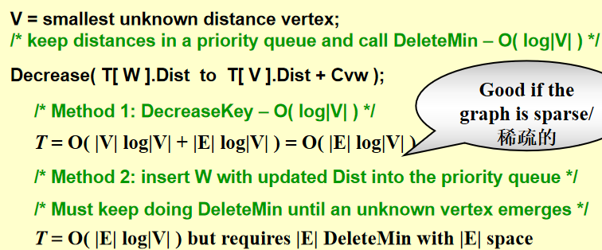
- Method1
- 第一项：每个顶点处理一次然后deletemin - find the smallest unknown
- 第二项：Decrease
- Method2 直接insert，不进行decrease
- Method1
有负边(no negative cycle)的情况¶
1 2 3 4 5 6 7 8 9 10 11 12 13 14 15 16 17 18 19 20 21 22 23 24 | |
\(T=O(|V|×|E|)\)，没有known set了
DAG - 有向前趋图¶
顶点可以按拓扑顺序选择，因为当一个顶点被选择时，如果没有任何来自未知节点的边，它的距离就不能再降低。
\(T = O( |E| + |V| )\) and no priority queue is needed.
-
AOE (Activity On Edge) Networks的应用 - CPM
-
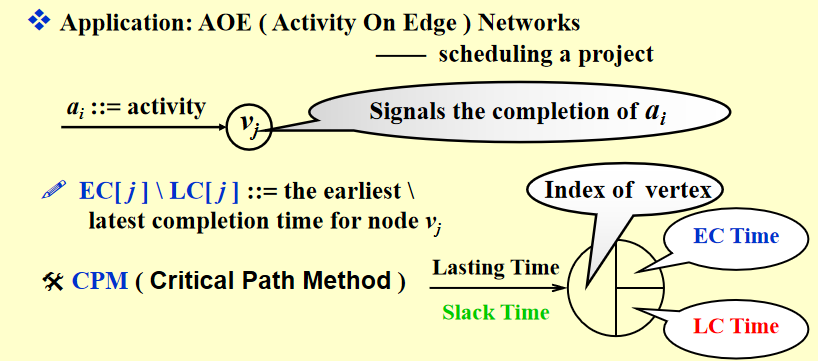
-
e.g. 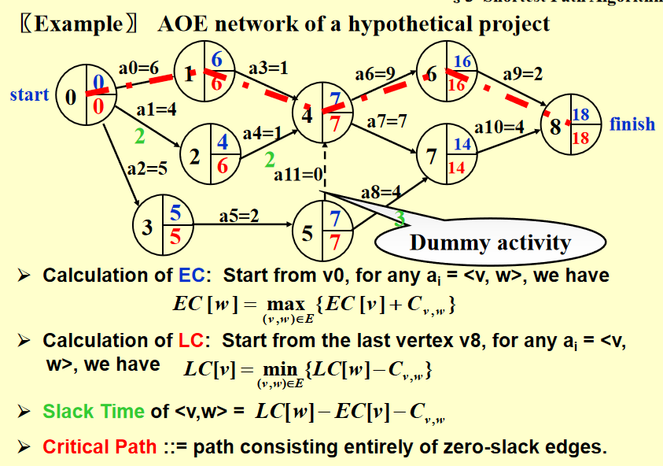
-
所有顶点最短路 - 直接遍历所有顶点解最短路图¶
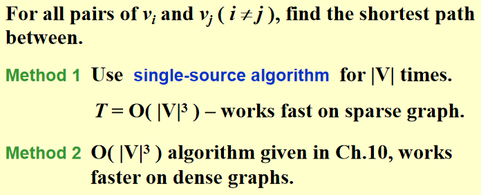
最大流问题¶
方法1：最开始的残差图是原来的图，不断寻找最短路（从流量最少的开始）存入flow graph并在残差图中删除，直到残差图中没有最短路：
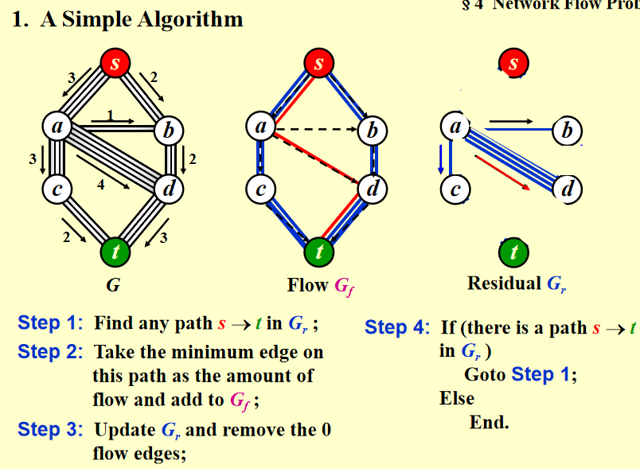
方法2：每次对于被选中的边，在残差图中add一个反向的边，这个算法可以得到全局最优解
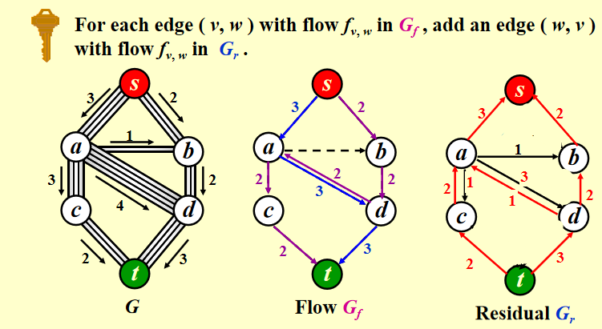
具体实现1： 把G看成无权图，每次使用bfs找到一条路径然后对残差图添加反向路径，直到没有路径可找
\(T=O(f·|E|)\) where \(f\) is the maximum flow.
具体实现2： 类Dijkstra's algorithm，只不过每次选known vertex的标准是allows the largest increase in flow
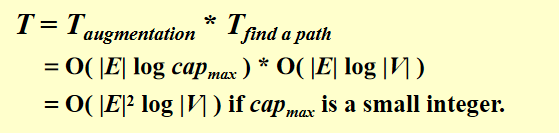
具体实现3：在具体实现1的基础上减去的路径数不是1而是整个路径的流量的最小值
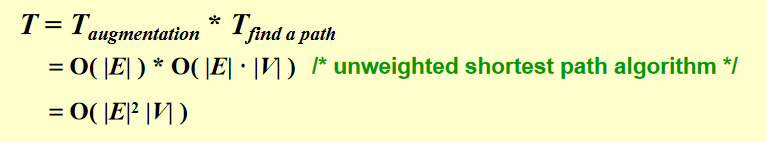
note：
- 如果每一个不属于{s,t}的角都只有一个入边或一个出边，那么时间的bound会被减少到\(O(|E||V|^{1/2})\)
- 最小成本流问题是在所有最大流量中，在每条边都有单位流量成本的情况下，找出一个成本最小的流量
最小生成树¶
图G的生成树是由V(G)和E(G)的子集组成的树
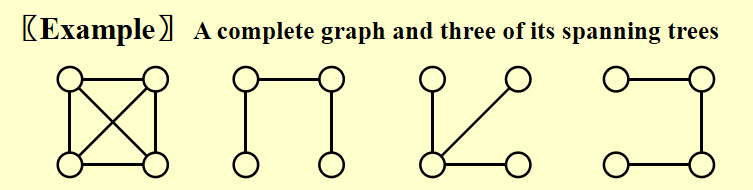
-
最小生成树是树，因为它是无环的——边的个数是|V| - 1
-
它是最小的，因为边的总成本是最小的
-
它是生成的，因为它覆盖了每个顶点
-
如果G连通，则存在最小生成树
-
在生成树中加入一条非树边，得到一个环
算法1 贪心算法¶
- 我们必须只使用图中的边
- 必须精确地使用|V|-1条边
- 我们不会使用产生cycle的边
使用类似Dijkstra's algorithm遍历点，使用并查集判断是否有cycle
- 此处并查集也可以用loop简化判断，但是Kruskal's Algorithm不可以
算法2 Kruskal’s Algorithm——maintain a forest¶
建堆，把所有边都放在堆里面
1 2 3 4 5 6 7 8 9 10 11 12 13 | |
\(T=O(|E|log|E|)\) 遍历每条边*deletemin
DFS的应用¶
先序遍历的普遍形式
1 2 3 4 5 6 7 | |
1. 无向图¶
1 2 3 4 5 6 7 8 9 | |
2. Biconnectivity - 双向连通性¶
- v是articulation point如果去掉v会使得图被分为（至少）两个连通分量
-
G是biconnected graph如果：
- G是connected
- 没有articulation point
-
双向连通分量 - 最大双向连通子图
- 单个节点是一个双向连通分量
- 两个或多个双连接分量不能共享任何边。因此E(G)被G的双连通分量分割。
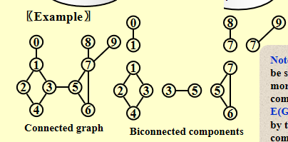
寻找双连通分量¶
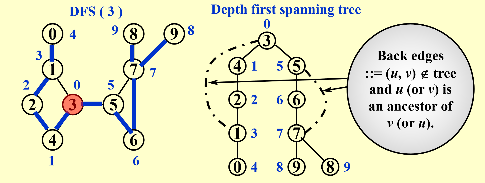
- DFS获得生成树，记录DFS访问顺序 - If u is an ancestor of v, then Num( u ) < Num( v )
- 把原图中没有出现在spanning tree的边用虚线表示
- 寻找articulation point：
- 如果根结点至少有2个子结点，那么它就是一个articulation point
- 其他节点articulation point是当且仅当：
- 有至少一个child
- 不可能向下走至少一步之后可以跳到u's ancestor - 例如这张图依据这个性质排除了2、4、6
具体算法： - 定义： - 根节点和不含back edge的叶节点的Low number就是自己的num
- articulation point条件：
- 至少有两个孩子的根节点
- 至少有一个孩子且
Low(child) >= Num(u)的其他节点
3. 欧拉环¶
定义：一笔画且在起始点结束（不考虑起始点的是欧拉路径）
- 只有当图是连通的并且每个点是偶数度时，欧拉环才可能存在
- 如果恰好有两个奇数度的顶点，欧拉路径是可能的，并且必须从其中一个奇数度顶点开始
输出欧拉环：多轮DFS（算法目的：寻找一张图有几个欧拉环）
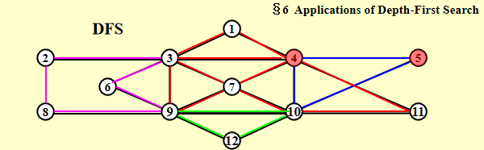
- 该路径应该被维护为一个链表
-
对于每个邻接表，维护一个指向最后扫描到的边的指针
-
\(T=O(|E|+|V|)\)
Find a simple cycle in an undirected graph that visits every vertex – Hamilton cycle